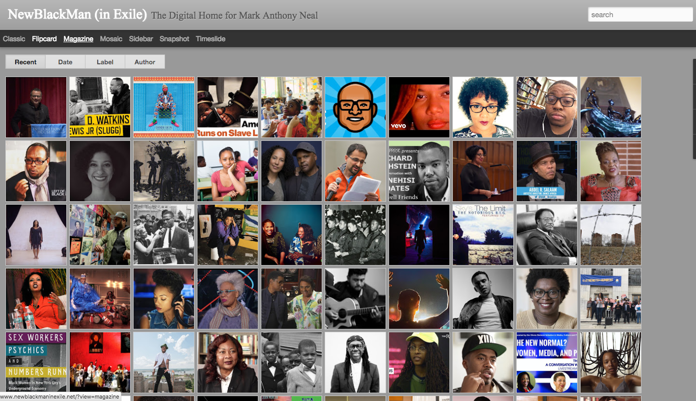
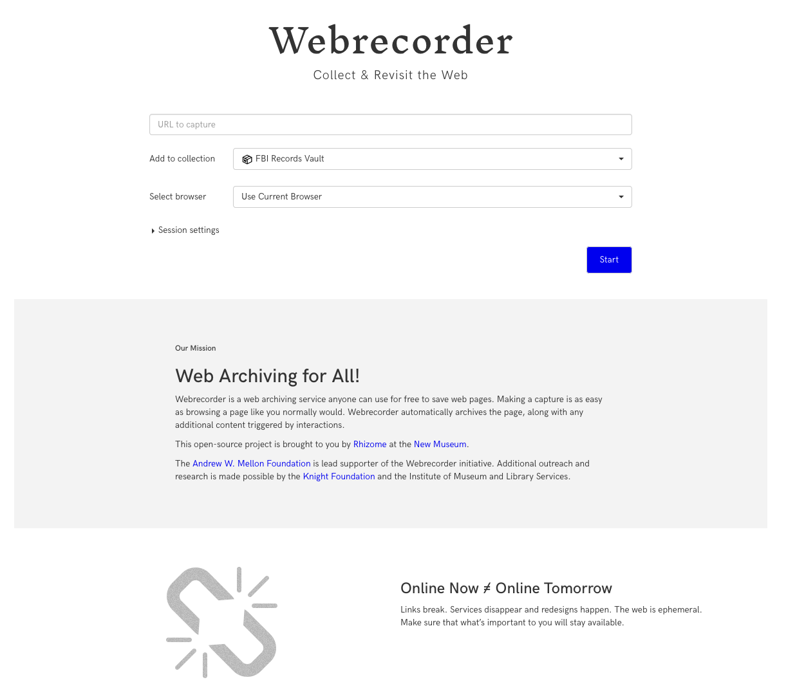
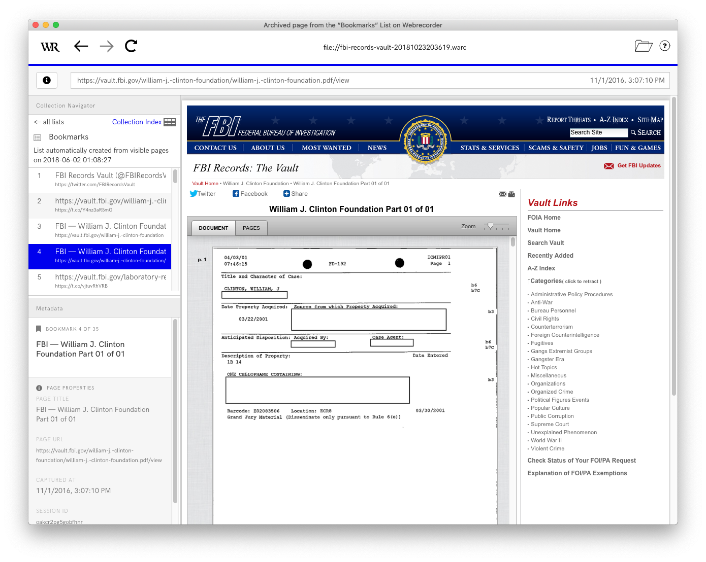

# Wayback Exercise
---
1. *Install* the Wayback browser extension ([Chrome](https://chrome.google.com/webstore/detail/wayback-machine/fpnmgdkabkmnadcjpehmlllkndpkmiak)/[Firefox](https://addons.mozilla.org/en-US/firefox/addon/wayback-machine_new/))
2. *Browse* the web!
3. See if a page is in the Internet Archive. *When* was it
archived? *What* did it look like before?
4. Try to find a page that *isn't* in the archive. See if you can use
the browser extension to *save* it. Think about why it *wasn't* in
the archive already.
How much of the web was in the Internet Archive...in 2016?
510,000,000,000 web objects / 130,000,000,000,000 unique URLs = 0.39%



# Webrecorder Exercise
---
1. Go to [https://webrecorder.io](https://webrecorder.io) and
(optionally) create an account.
2. Paste http://www.newblackmaninexile.net/ into the box to start
*archiving* it.
3. Archive more content by *interacting* with the website.
4. *Stop* recording and *Download* your collection.
5. Install [WebrecorderPlayer](https://github.com/webrecorder/webrecorderplayer-electron/releases/tag/v1.5.0).
6. *Disconnect* from Wi-Fi!
7. *Open* your webarchive in WebrecorderPlayer.
*Bonus: see if you figure out how annotation works.*
Questions?
How could you use web archiving in your research?
What should you think about when deciding to
make a collection public?
Why is it important for people (not just
automated bots) to help archive the web?
How do the tools (Wayback, Webrecorder) shape
the types of archives you can build?